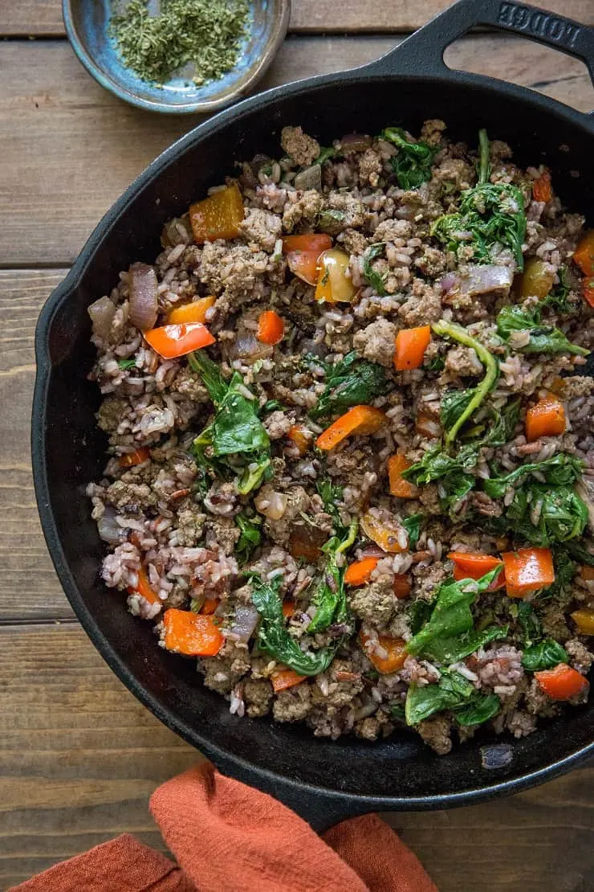

Beef Helper

Ingredients
- Ground beef (1 lb)
- Quinoa (1 1/4 cups)
- Spinach (3 handfuls)
- Peas (1 cup)
- Carrots (2-3)
- Red Pepper (1)
Instructions
- Boiler 2 1/2 cups of water
- Place ground beef on hot skillet
- Season ground beef
- Begin cooking quinoa
- Mash ground beef
- Add spinach, peas, carrots, and peppers as beef browns
- Add quinoa
- Stir and enjoy!